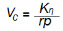
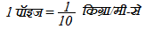

द्रवों के प्रवाह
द्रवों के प्रवाह के दो प्रकार होते है - धारा रेखीय प्रवाह तथा विक्षुब्ध प्रवाहै। क्रांतिक वेग से कम वेग पर द्रव प्रवाह धारा रेखीय तथा अधिक वेग पर विक्षुब्ध प्रवाह का उदाहरण है उपरोक्त दोनों ही प्रवाह रेनाॅल्ड के मान (प्रवाह के लिए) पर निर्भर करते है।
किसी नली में द्रव का क्रांतिक वेग रेनाॅल्ड के सूत्र, 
द्रवों की श्यानता ताप बढ़ने पर घटती है, जबकि गैसों की श्यानता ताप बढ़ने के साथ बढ़ती है श्यानता गुणांक की विमा (ML-1 T0-1) होती है तथा इसका व्यावहारिक मात्रक पाॅइज होता है।
